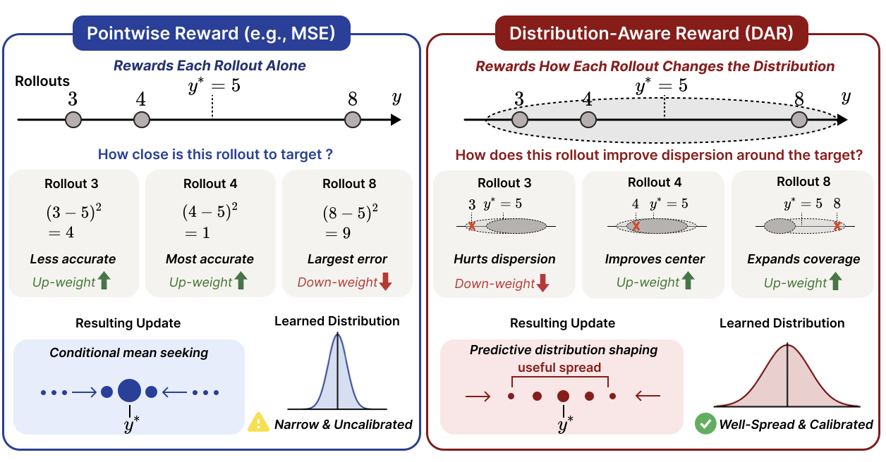
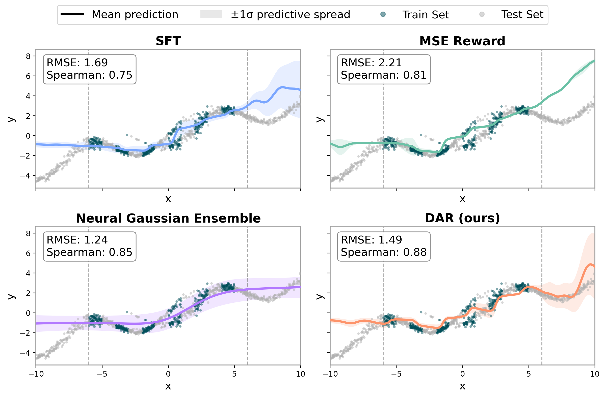
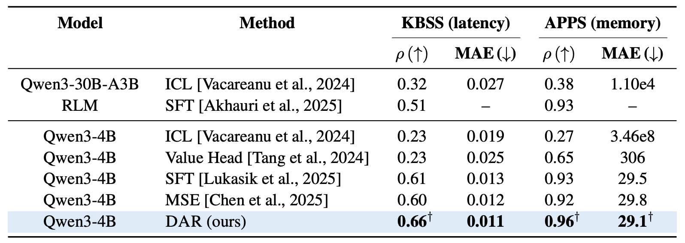
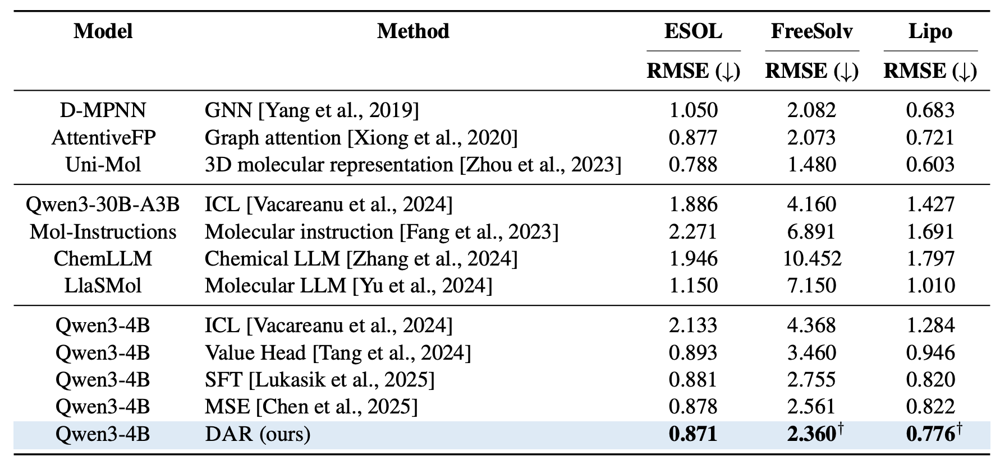
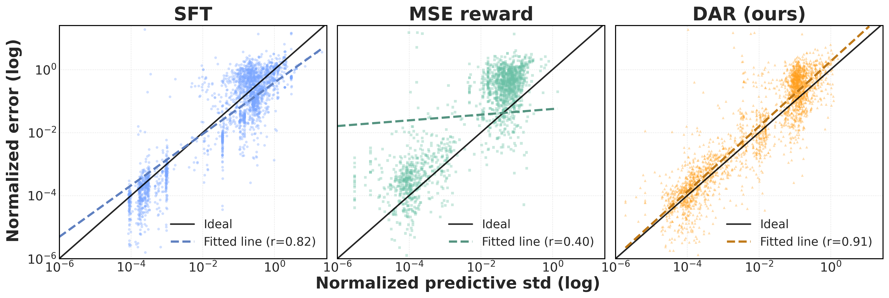
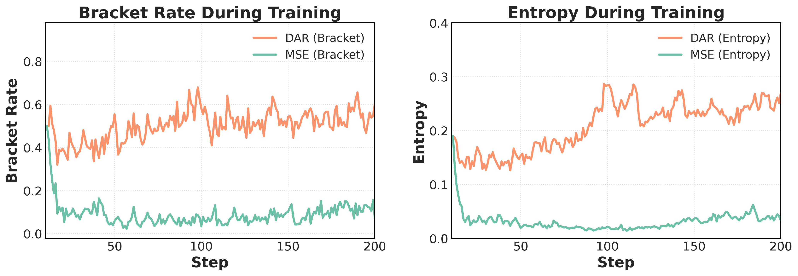

Distribution-Aware Reward:
Reinforcement Learning over Predictive Distributions for LLM Regression
We train language models for regression by improving the quality of the predictive distribution formed by multiple decoded samples, rather than scoring each numeric output independently.
From point predictions to predictive distributions
Pointwise reward
Existing LLM regression objectives often score each decoded numeric prediction independently. This can improve point estimates, but it does not ensure that sampled predictions form a calibrated predictive distribution.
Distribution-aware reward
DAR treats multiple rollouts as an empirical predictive distribution and rewards each rollout based on how it improves distribution quality, encouraging useful spread around the target.

Pointwise MSE scores each rollout independently and can encourage mean-seeking behavior. DAR scores each rollout by its leave-one-out contribution to the full predictive distribution, rewarding both accuracy and useful spread around the ground truth.
Reliable numerical prediction with LLMs
Large language models can predict real-valued quantities from heterogeneous inputs such as text, code, and molecular strings, but most training objectives score each decoded numeric prediction independently, improving point estimates without ensuring calibrated predictive distributions. We introduce Distribution-Aware Reward, an on-policy reinforcement learning objective that trains language models to produce better predictive distributions for regression tasks rather than only optimizing individual decoded outputs against scalar targets. DAR treats multiple decoded samples as an empirical predictive distribution, evaluates it with the Continuous Ranked Probability Score, and assigns leave-one-out credit based on each rollout's marginal contribution to distribution quality. Across a controlled Gaussian-mixture task, code performance prediction, and molecular property prediction from SMILES strings, DAR improves over supervised fine-tuning and pointwise RL baselines, including a 6-point Spearman improvement on KBSS, while further analyses show that it mitigates rollout diversity collapse and improves uncertainty diagnostics.
CRPS with leave-one-out credit assignment
For each input $x_i$, the model samples $K$ decoded numeric predictions $\{p_{ik}\}_{k=1}^{K}$, which define an empirical predictive distribution $F_i$. DAR evaluates this distribution using the negated empirical CRPS:
Since on-policy RL requires a rollout-level reward, DAR assigns credit to each rollout by measuring how much it changes the distribution-level score:
A rollout receives positive reward when removing it worsens the predictive distribution, and negative reward when it is harmful or redundant. This encourages rollout sets that are well-centered and appropriately dispersed.
Distribution-aware training improves regression performance
DAR improves rank correlation over SFT and pointwise RL baselines for code performance prediction.
DAR achieves the strongest LLM-based rank correlation on the Gaussian-mixture synthetic task.
DAR remains competitive without graph or 3D molecular representations.

Synthetic Gaussian-mixture regression. DAR better preserves global ordering and tracks the target structure in extrapolated regions. Although the neural Gaussian ensemble has a stronger task-specific inductive bias, DAR achieves the strongest LLM-based Spearman correlation without assuming a parametric Gaussian form.

Code performance prediction. DAR improves Spearman correlation and yields better runtime-based program rankings. Off-the-shelf ICL and the value-head baseline both underperform, suggesting that general-purpose prompting or simply attaching a regression head is not sufficient for long-context code regression without task-specific adaptation.

Molecular property prediction. DAR consistently outperforms other LLM training strategies and is competitive using only SMILES strings, despite not using graph structure, curated molecular features, or 3D molecular representations used by specialized chemistry models.
Better rollout dispersion and uncertainty diagnostics

Uncertainty diagnostics. Rollout standard deviation aligns more strongly with prediction error under DAR, indicating more informative predictive uncertainty and better distribution-level calibration.

Training dynamics. DAR maintains higher bracketing rate and entropy during RL training, suggesting that it mitigates diversity collapse while keeping sampled predictions better spread around the target.
BibTeX
@article{park2026distributionaware,
title={Distribution-Aware Reward: Reinforcement Learning over Predictive Distributions for LLM Regression},
author={Park, Jungsoo and Chae, Hyungjoo and Mendes, Ethan and DeYoung, Jay and Kishore, Varsha and Xu, Wei and Ritter, Alan},
journal={arXiv preprint arXiv:2605.20740},
year={2026},
url={https://arxiv.org/abs/2605.20740}
}